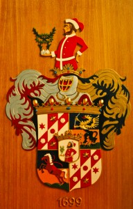

Crowdsourcing! Zahle 100,- € für Wappen
April 1, 2010Diese Webseite heißt gartnerich.com weil sie von der Familie Gartner ist. Und wir Gartners sind adelig – also so bissi zumindest… An sich ist das noch nicht spektakulär, weil solange man kein von im Namen trägt (oder noch besser einen Graf) bringt das nix. Etwas hat man allerdings davon: Ein Wappen! Unser Wappen schaut so aus:

Unser Adelsbrief stammt vom 15.11.1699 und in ihm wird das Wappen etwa wie folgt beschrieben:
…Adeliches Wappen hinfüro ewiglich zu gebrauchen und also zu führen gnädiglich gegönnt und erlaubet als mit Namen: “einen quartierten Schild, dessen hinter untere und vorder obere Feldung in drei gleiche Balken geteilt, deren hintere und vordere weiß, der mittlere aber rot ist; Vom vorderen unteren bis zum hinteren ober Eck mit einer Strasse der Schräge nach durchschnitten, so im weißen rot und im roten weiß ist, auf welch jedem länglichen weißen Balken einer auf d. rot zwei sechseckige goldene Sterne, in der Schrägstrasse aber im Roten eine weiße und im weißen eine rote Rose zu ersehen ist. Vorder untere und hinter obere Feldung, in der Mitte über Zwerch also abgeteilt, daß der untere Teil gelb- oder goldfarbig, oberer aber blau oder lasurfarben und im Untern auf grünem dreigehügeltem Berg ein braunes zum Sprung aufrecht gestelltes gesatteltes Pferd mit zurückfliegendem Zaum, im hinter oberen Teil ein auf gleichfalls gehügeltem Berg ein stehender Greif erscheint, so von unten bis auf die Mitte blau oder lasurfarbig, im oberen Teil aber gelb oder goldfarbig ist, mit aufgetanen Flügeln, rot ausschlagender Zunge und mit der rechten Vorderklaue einen gebogenen Säbel bei dem Handgriff, mit der linken Klaue aber die Spitze haltend. In der Mitte der Quartierung einen weisses oder silberfarbiges gekröntes Herzschild, in welchem ein Bergknapp mit braunem Bart und Haaren, angetan mit einem roten engen Leibrock und auf dem Kopf mit einer ungarischen abhangenden Haube, daran der Überstülp, und der Leibgürtel, Knöpfe und Rockaufschlag weiß oder silberfärbig, die linke Hand in die Hüfte setzend, in der Rechten aber eine Bergstufe, woraus zwei grüne Palmzweige, mit einem Lorbeerkränzel umfangen, hervorwachsen, haltend. Auf dem Schild ein freier, adeliger Turnierhelm mit umfangenden Kleinod usw. usw.”
Nun würde ich das Wappen gerne nutzen – oder etwas, dass dem Wappen ähnlich ist. Ich habe aber nur ein kleines Foto in unserer Familiengeschichte entdeckt. Außerdem ist das Wappen ganz schön verschnörkelt; ich würde mir etwas schlichteres, aufgeräumteres wünschen. Deswegen folgender Aufruf:
Hier die Spielregeln:
- Das Wappen muss mir gefallen – so gut, dass ich es nutze. Anders herum: Wenn ich es nutze, zahle ich.
- Belohnt wird nur das Wappen, welches mir am besten gefällt.
- Ich bekomme alle Nutzungsrechte an dem Wappen. D.h. unter anderem, dass der Künstler alle Rechte vergeben hat weil er sie selber hat.
- Nochmal explizit: Es ist ein echt selber entwickeltes Werk, nix kopiertes.
- Bis Ende April warte ich garantiert, länger nicht unbedingt.
Die technischen Anforderungen:
- Geliefert wird ein oder mehrere PSD-Files.
- Es soll groß und klein nutzbar sein, bzw. Varianten für große und kleine Nutzung beinhalten. Ein Beispiel für große Nutzung wäre ein Druck auf dem Rücken eines T-Shirts. Eine kleine Nutzung wäre auf einem Golfball.
Und hier noch ein paar Stichpunkte mit Hinweisen was mir gefällt (oder nicht):
- Sie Mordernisierung stelle ich mir so vor, daß es weniger verschnörkelt im Detail wird.
- Es darf flippig sein, aber nicht zerzaust.
- Man muss nicht modelltreu bleiben, weglassen ist erlaubt. Es sollte sich aber schon an dem Gartner-Wappen anlehnen.
- Beispieleinsätze für das Wappen wären
- Auf der Fahne unseres Fahrradanhängers (Größe ca. DIN A4)
- Auf T-Shirts oder Polos, groß auf dem Rücken ofer klein auf dem Ärmel.
- Auf dieser Webseite.
- Auf Golfbällen oder Skiern.
- Da fällt mir dann sicher noch mehr ein…
So jetzt seid Ihr dran. ich bin schon gespannt, was da kommt – und ob überhaupt etwas kommt…
Gute Nacht, – Till.